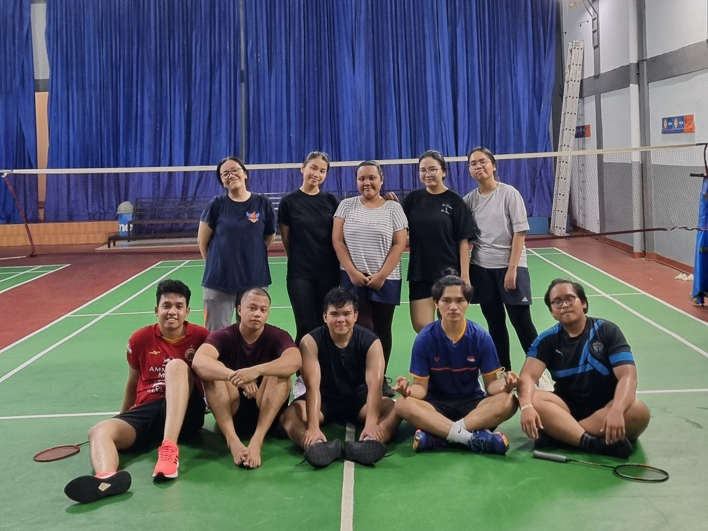

Badminton
Latihan badminton HKBP Srengseng Sawah diadakan setiap hari Minggu pukul 14.00 hingga 16.00. Kegiatan ini terbuka untuk semua jemaat yang ingin berolahraga sambil mempererat kebersamaan. Latihan badminton tidak hanya menjadi ajang untuk meningkatkan kebugaran fisik, tetapi juga untuk memperkuat ikatan antarjemaat dalam suasana yang santai dan menyenangkan. Dengan diadakannya latihan rutin ini, kami berharap semakin banyak jemaat yang dapat bergabung, menikmati olahraga, dan menjalin relasi yang lebih akrab di antara sesama.